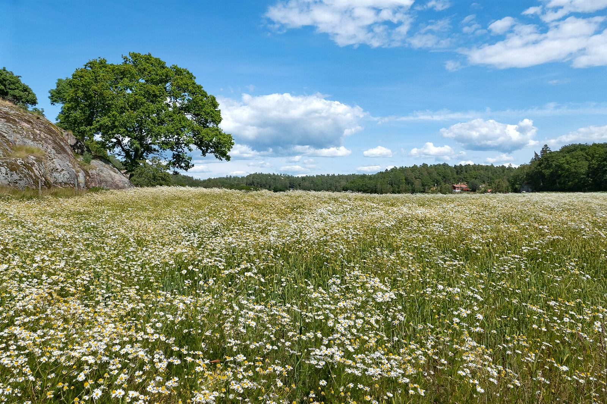
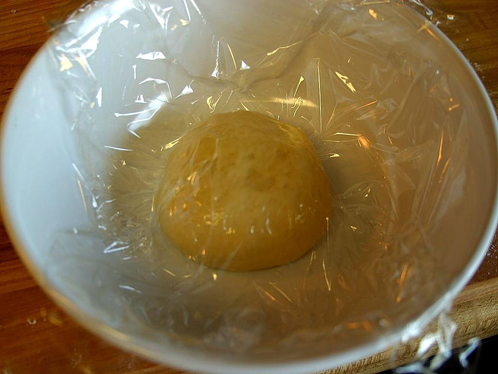
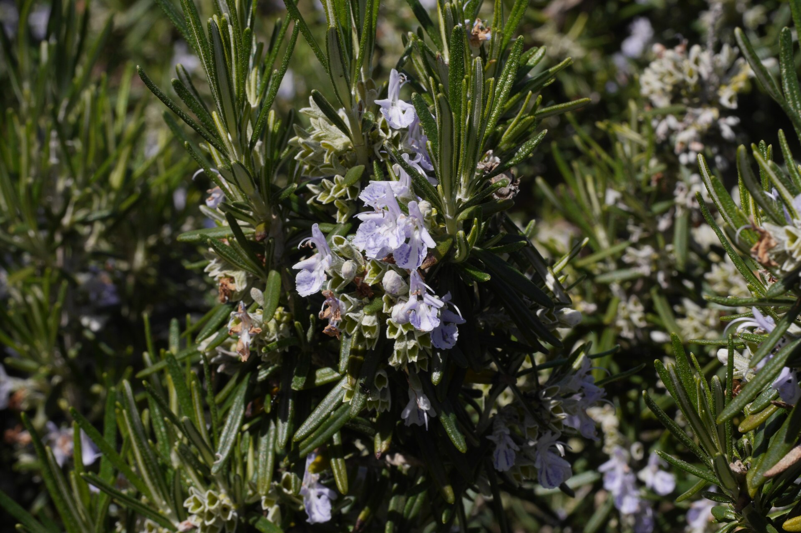
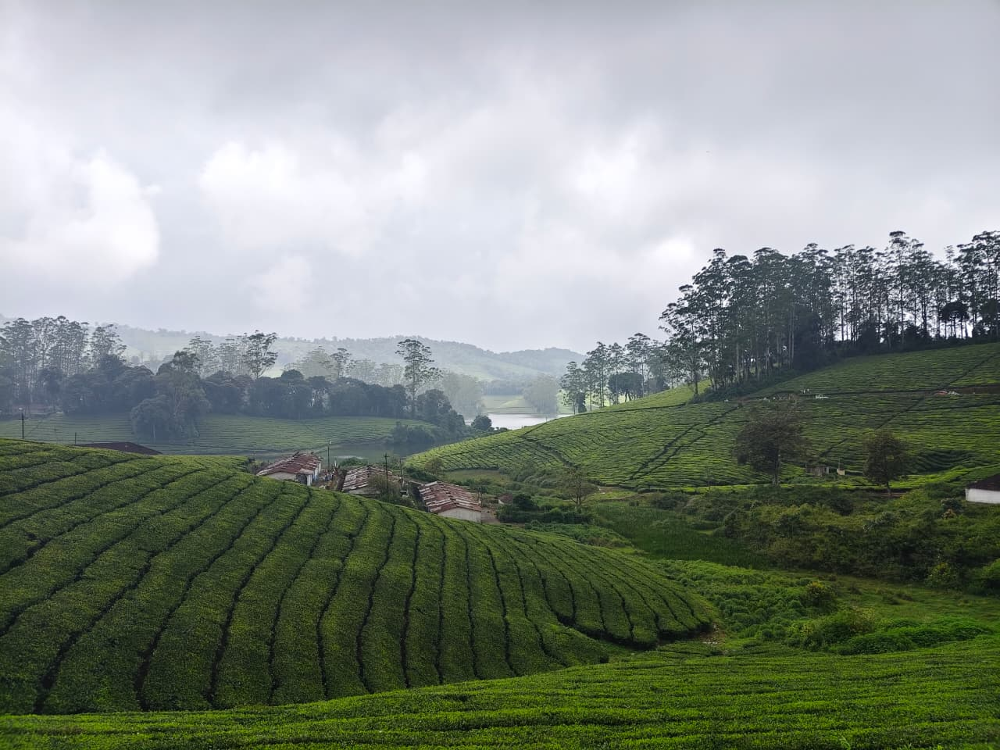

Photo: イメージ
ABOUT
PIZZA AND CAFE SOILについて
屋号を読む
SOIL(ソイル)は、英語で「土」を意味する言葉です。
ピザとカフェのお店「PIZZA AND CAFE SOIL」。
屋号に込められた想いや由来は、お店のInstagramやお電話でお尋ねください。

Photo: イメージピザとカフェ
ピザ
お店ではピザをご用意しています。
カフェ
カフェメニューもあります。
種類や内容は、Instagramまたはお電話でご確認ください。

Photo: イメージ
Photo: イメージ